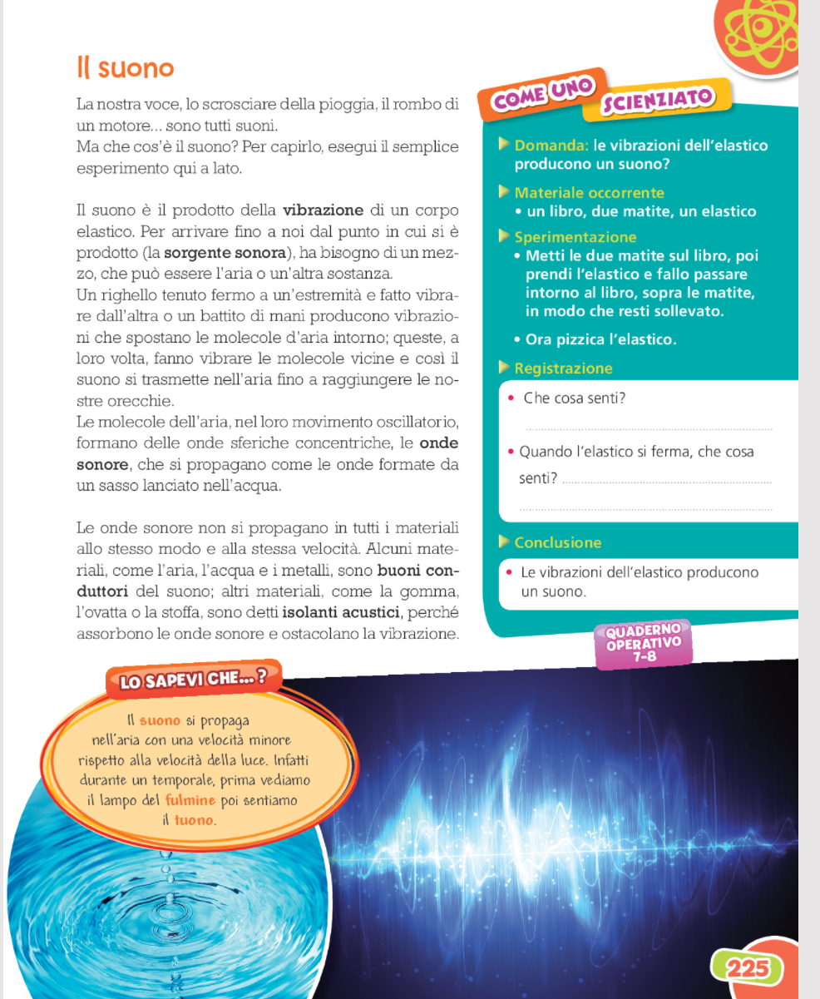
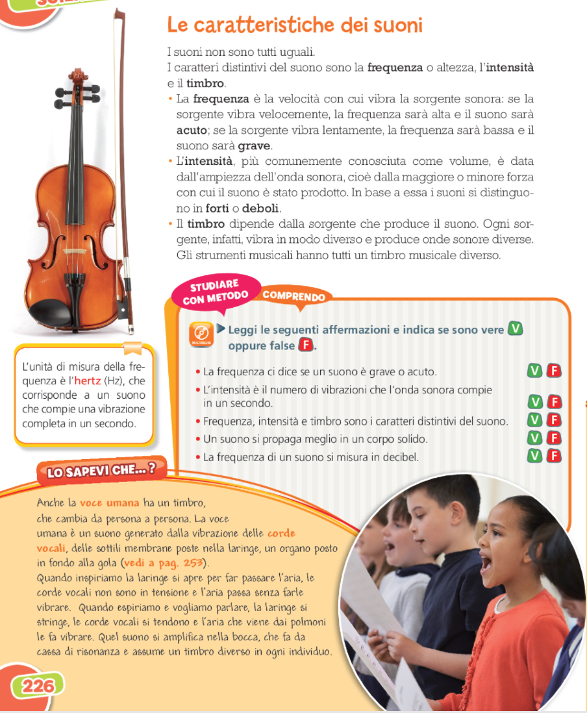
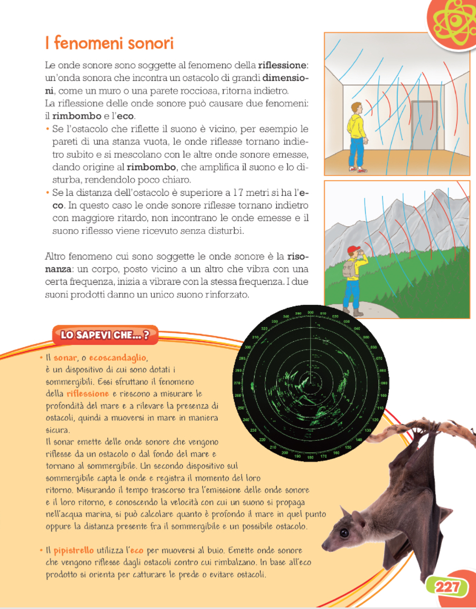

Audio scienze
Pagina 225

You will see this text if native audio playback is not supported.
Pagina 226

You will see this text if native audio playback is not supported.
Pagina 226

You will see this text if native audio playback is not supported.